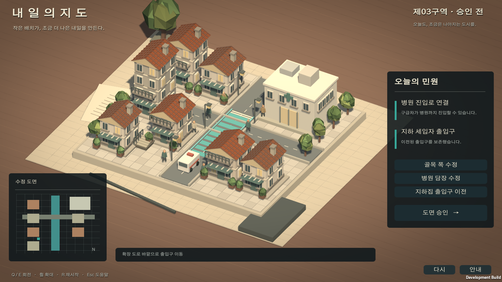

AI reference / previous build / revised Unity comparison
← 로우폴리 시안 · 전체 게임 갤러리
시안에서 플레이 가능한 Unity PoC로
아래 이미지는 Windows 실행 파일에서 캡처한 실제 Unity 화면입니다. 기존 규칙과 보유한 Kenney CC0 모델을 연결했습니다. AI 시안과는 구현 범위와 디테일이 다릅니다.
01 / TOMORROW MAP내일의 지도

골목 폭, 병원 담장, 지하 출입구를 수정하고 승인합니다. 구급차 통행과 주민 출입 보존 여부에 따라 세 결말로 나뉩니다.
Windows 실행 파일 · 프로젝트 안내
02 / ERODING FIELDS밭이 줄어드는 세계

24칸의 밭에 계절 작물을 심고 제방을 설치합니다. 하루 또는 일주일 진행으로 성장, 자동 수확, 날씨, 침식과 생활비가 적용됩니다. 현금이나 땅이 바닥나면 운영이 끝납니다.
Windows 실행 파일 · 프로젝트 안내
실행 파일은 저장소 내 Build 폴더에서 실행하세요. 다른 PC로 옮길 때는 exe만 복사하지 말고 Build 폴더 전체를 복사해야 합니다. 웹브라우저용 빌드는 아닙니다.
공통: Q/E 회전 · 휠 확대/축소 · R 재시작 · Esc 도움말. 농장: 밭 클릭 선택 · Space 하루 진행.